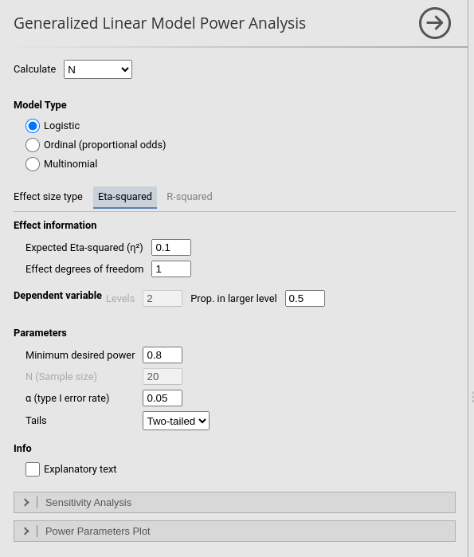
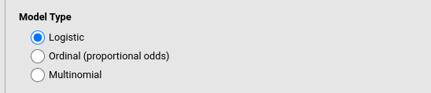
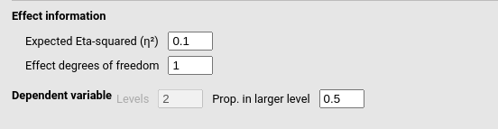
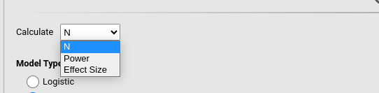
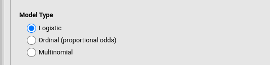
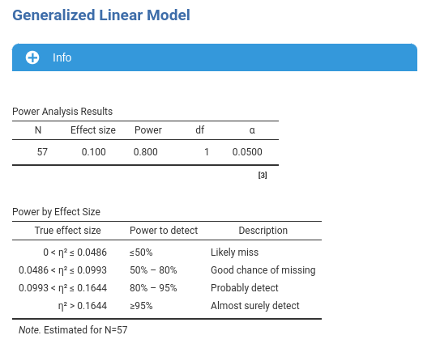
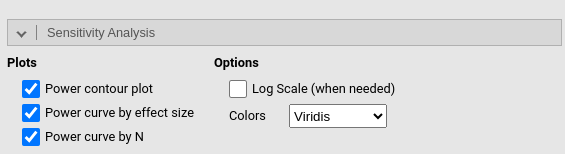
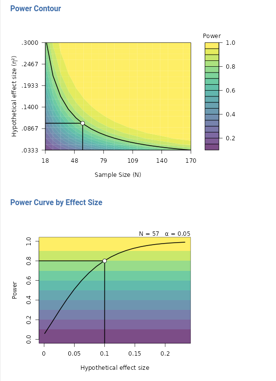
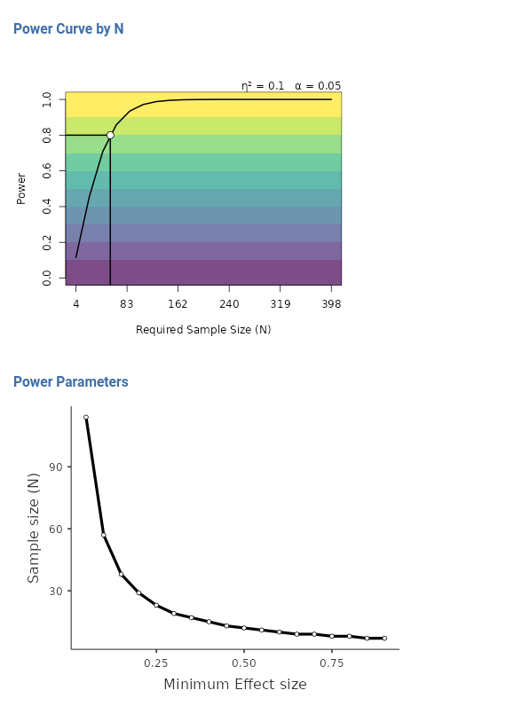

Generalized Linear Model
Power Analysis
1.2.0

Generalized Linear Model allows users to compute power
parameters for tests in generalized linear models. The sub-module is
intended for categorical outcomes and currently supports logistic,
ordinal proportional-odds, and multinomial models.
The analysis requires three main decisions. First, select the type of outcome model. Second, select the aim of the analysis: sample size, achievable power, or minimum detectable effect size. Third, select the effect size index to use in the computation.

Model type
The option Model Selection defines the outcome model used in the power analysis.
Logistic is used for binary outcomes. In this case the dependent variable has two levels.
Ordinal (proportional odds) is used for ordered categorical outcomes. The categories are treated as ordered levels of the same response variable.
Multinomial is used for nominal categorical outcomes with more than two unordered levels.
For the outcome distribution, PAMLj asks for the number of outcome levels and the proportion in the largest level. In the logistic model, the number of levels is fixed to two, so the Levels option is not required. For ordinal and multinomial models, Levels indicates the number of outcome categories.
The option Prop. in larger level defines how unbalanced the outcome distribution is expected to be. A value of .50 corresponds to a balanced binary outcome. Larger values indicate that one category is expected to include a larger proportion of cases.

Aim:

N (Required sample size)
When estimating the required sample size for planned research, the researcher should specify the expected effect size, the desired power, and the type I error rate. PAMLj then estimates the minimum sample size required to obtain the desired power.
For example, if the aim is to detect an eta-squared of .10 in a logistic model, with one degree of freedom and a desired power of .90, select Calculate: N, choose Eta-squared, and fill in the effect-size and power parameters.
The result table reports the estimated sample size together with the parameters used in the computation. If sensitivity plots are requested, the module also shows how power changes for alternative values of sample size and effect size.
Power (achievable power)
Achievable power analysis evaluates the probability of obtaining a significant result given a fixed sample size and an assumed effect size.
This aim is useful when the sample size is constrained by the study design, the available population, or practical limitations. In that case, set Calculate: Power, enter the available N, the expected effect size, the outcome model, and the type I error rate.
The estimated power should be interpreted as the probability of rejecting the null hypothesis under the assumed population effect and sample characteristics.
Effect size
The option Calculate: Effect Size estimates the minimum detectable effect size. This is the smallest effect size that can be detected with the requested power, given the available sample size and the selected alpha level.
This aim can be useful when the sample size is already fixed and the researcher wants to know which effect sizes the study can reasonably detect.
Effect size indexes
The sub-module offers two effect size parameterizations.
Eta-squared
Eta-squared is used when the target effect is represented by an eta-squared index. The user should provide the expected Expected Eta-squared and the Effect degrees of freedom associated with the test.
For a single regression coefficient or a binary predictor, the effect degrees of freedom are usually 1. For a categorical predictor with \(k\) levels, the effect degrees of freedom are usually \(k-1\). For a block of predictors, the degrees of freedom correspond to the number of parameters tested together.
R-squared
R-squared is used when the target effect is represented by the model \(R^2\). In this mode, the user should provide the expected R-squared and the Model degrees of freedom.
When R-squared is selected, the Model Definition panel becomes available. This panel can be used to compute the model degrees of freedom from the number of covariates, categorical factors, and interactions included in the model.
Model Definition
The Model Definition panel is used only for the R-squared effect size. It helps reconstruct the degrees of freedom of the full model.
Continuous predictors should be entered as Number of covariates. Categorical predictors should be entered as Number of factors, and their number of levels should be specified in the factor definition table.
For each group of predictors, the option Max Order defines the highest interaction order included in the model. Main effects include only the separate predictors. Higher orders add two-way, three-way, or all possible interactions. The option Factors Covariates interactions controls interactions between categorical factors and continuous covariates.
As soon as the model structure is filled in, PAMLj updates the Model degrees of freedom field used by the \(R^2\) analysis.

Parameters
As for any other sub-module in PAMLj, the required power, the observed \(N\) (Sample size) and the type I error can be set accordingly to the user needs.
Results

The main results table Power Analysis Results show the power parameters \(N\) Effect size, Power and \(\alpha\). Depending on the aim, one of the parameter is the estimated one.
The Power by Effect Size returns the power estimation at different possible value of the effect size computed for the resulting \(N\), that is the required N computed by the power analysis.
Sensitivity analysis

The sensitivity analysis options have the same interpretation as in the other power-analysis sub-modules of PAMLj.
Power contour plot shows power as a function of sample size and effect size.
Power curve by effect size shows how power changes across possible effect sizes for a fixed sample size.
Power curve by N shows how power changes across possible sample sizes for a fixed effect size.
The option Log Scale (when needed) can improve readability when the plotted values span a wide range. The option Colors selects the color palette used in the plots.
The Power Parameters Plot panel allows the user to build a custom plot by selecting the parameter shown on the x-axis, the parameter shown on the y-axis, and optionally a third parameter used to draw different curves.


When Results table is selected, the values used to draw the plot are also reported in a table.
Return to main help pages
Main page
Comments?
Got comments, issues or spotted a bug? Please open an issue on PAMLj at github or send me an email